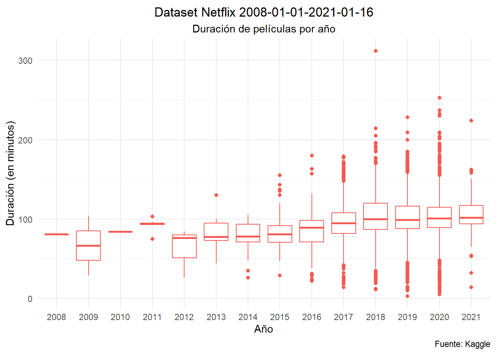
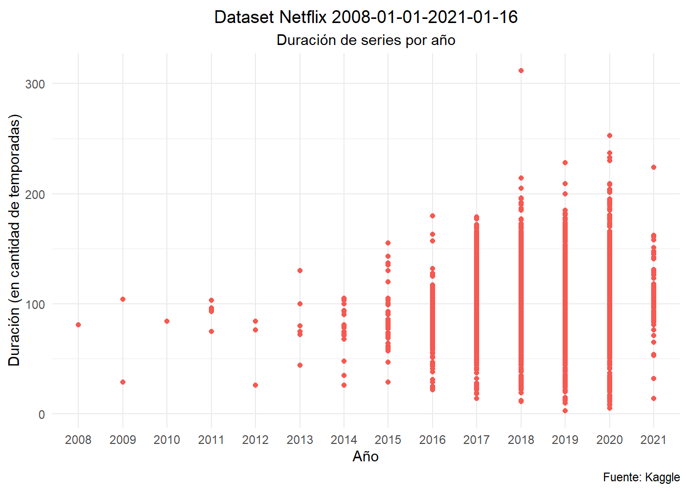

A continuación veremos algunas técnicas de análisis exploratorio utilizando un dataset muy intersante que contiene productos de Netflix con sus respectivas variables. El dataset puede encontrarse en el sitio de kaggle.
Puede apreciarse un significativo crecimiento de la proporción de la oferta dedicada a las series. Veamos como se resuelve esta dicotomía al enfrentar las proporciones con la variable pais de origen. Dado que la variable “country” puede contener varios paises debido a coproducciones, puede resultar util generar un nuevo dataframe con todos los paises por separado. Luego, elaboraremos una nueva tabla que contenga las cifras de cada tipo de producción junto con el porcentaje que representa al interior de cada país. Estos son los 10 paises que encabezan el ranking
La gráfica evidencia que Estados Unidos es el principal proovedor de contenido de la plataforma con una distancia de mayor amplitud en el caso de las peliculas, donde India supera a Gran Bretaña en el segundo lugar.
Duración
Veamos ahora la exploración de los contenidos según la duración.
Ver código
Base$duracion <-as.numeric(str_extract(Base$duration,'[0-9]+'))ggplot(Base %>%filter(type =="Movie"),aes(x =factor(Año), y = duracion))+geom_boxplot(color ="#f55951")+labs(title =paste0("Dataset Netflix ",Desde, "-", Hasta),subtitle ="Duración de películas por año",caption ="Fuente: Kaggle",x ="Año",y ="Duración (en minutos)")+theme_minimal()+theme(plot.title =element_text( hjust =0.5 , vjust =0.5),plot.subtitle =element_text( hjust =0.5 , vjust =0.5))

Tambien podemos mostrar la misma información a partir de un gráfico de puntos:
Ver código
#| message: false#| warning: falseBase$duracion <-as.numeric(str_extract(Base$duration,'[0-9]+'))ggplot(Base %>%filter(type =="Movie"),aes(x =factor(Año), y = duracion))+geom_point(color ="#f55951")+labs(title =paste0("Dataset Netflix ",Desde, "-", Hasta),subtitle ="Duración de series por año",caption ="Fuente: Kaggle",x ="Año",y ="Duración (en cantidad de temporadas)")+theme_minimal()+theme(plot.title =element_text( hjust =0.5 , vjust =0.5),plot.subtitle =element_text( hjust =0.5 , vjust =0.5))

Para finalizar, puede resultar de gran interés analizar la cantidad de temporadas de las series y su evolución con el correr de los años, tomando en consideración su año de lanzamiento.
Ver código
#| message: false#| warning: falseBase$duracion <-as.numeric(str_extract(Base$duration,'[0-9]+'))ggplot(Base %>%filter(type =="TV Show"),aes(x =factor(release_year), y = duracion))+geom_point(color ="#f55951")+labs(title =paste0("Dataset Netflix ",Desde, "-", Hasta),subtitle ="Duración de series por año",caption ="Fuente: Kaggle",x ="Año",y ="Duración (en cantidad de temporadas)")+theme_minimal()+theme(plot.title =element_text( hjust =0.5 , vjust =0.5),plot.subtitle =element_text( hjust =0.5 , vjust =0.5),axis.text.x =element_text(angle =90))